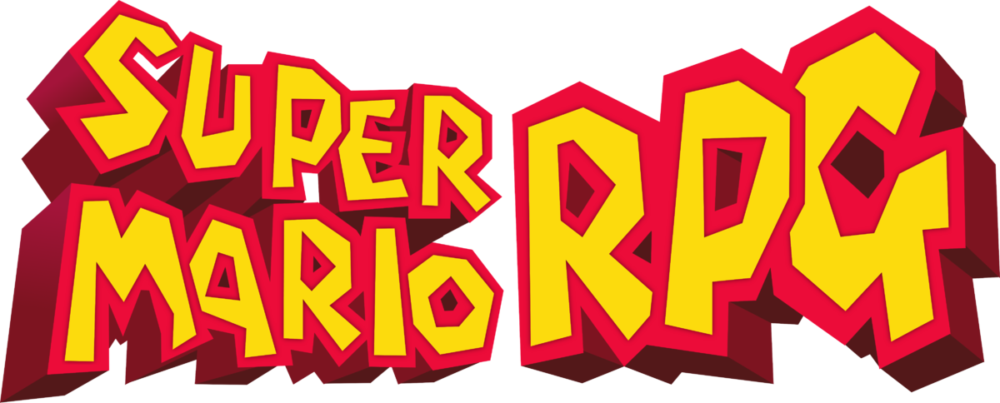

Super Mario RPG

| Release Date: | November 17th, 2023 |
| Genre: | RPG |
| Developer: | Intelligent Systems |
| Platform: | Nintendo Switch |
| Details: | Wikipedia |
Super Mario RPG is a modern remaster of Mario RPG: Legend of the Seven Stars that released for the Super Nintendo back in 1996. It is nearly a one-to-one remastering of the game, with some adjusted mechanics and a handful of additional content that wasn't present in the original game. I barely touched the original game, as I found it to be too hard as a kid and stopped when I got stuck on the first major boss. However, I've always heard it was a great game, so when the remaster was announced, I had to give the game another try.
The premise of this game is that after Mario rescues Peach from Bowser, Smithy's gang of weapon-based monsters has destroyed star road, preventing the wishes of the world's inhabitants being impossible to grant. It's up to Mario and friends to search for the missing pieces of Star Road and prevent Smithy's gang from taking over their home!
Gameplay
The main gameplay loop of this game is like most traditional RPGs that came out around it's time. You have a character that you explore an overworld area and occasionally will enter a turn-based battle against some enemies. Unlike other RPGs though, the overworld has platformer elements to make it feel more like a Mario game. You're able to jump around the isometric world, crossing gaps, climbing cliffs, swim through water, etc. Enemies aren't random encounters either, but wandering around the world, giving the player obstacles as they traverse the world.
Once in a battle, it functions much more like an RPG where you pick an action to do on your turn, and your opponent does the same on theirs. They do add in the action command mechanic though, giving the player a way to influence the battle with timing button hits. When either attacking or defending, hitting your action button at the right time can increase the damage you deal, or decrease the damage you take. The better your timing, the larger these multipliers become. It makes the battles feel much more engaging, as you can interact with the battles instead of just scrolling through menus and watching the numbers change.
The game itself is pretty easy, as it provides the player with plenty of items and currency, along with the skills that your party learns easily put fights in your favor if you utilize them effectively. Personally, I only struggled on one fight during the main story, and that was an optional hidden boss. I do think I did pretty well with my action commands, but I never felt like I was punished for missing a command. This isn't a bad thing, in fact it probably would of been much more frustrating if you had to constantly time your hits properly, but just something of note.
Story/Worldbuilding
The overall story itself is fairly basic, collect the missing pieces and defeat the big bad guy. Your party members each have their own reason for traveling with Mario, some of which get touched on a bit deeper with some interesting backstory, but it's just a bit deeper than the main story.
Despite that, the world itself feels very much alive. Each NPC has their own personality, some of which have their own little cutscene that plays. They're interact with each other, with the party, or even with the player depending on what they have Mario do. Their dialogue can be humorous at times, encouraging you to talk to each one to see what funny line they might say. Each area felt alive, but the areas themselves felt fairly isolated from each other. They would mention each other existence, but they very much felt like separate worlds from other Mario games, existing in the same world, but quite isolated from each other.
The game itself is fairly linear, as there's rarely any backtracking that is required to progress the story. Though the game does reward the player for exploring the world as they progress through the game. Different areas of the world change depending on story progress, where NPCs might react differently, a new cutscene will play out, or even hidden features will unlock if you manage to find it. It rewards exploration, and can help tie up some loose ends for some of the NPCs and their own stories.
Visuals & Audio
The visuals of the game are fantastic. It clearly maintains the style the original game had, but with the added effects that modern systems can provide, like lighting and shaders, that give an extra layer of visuals to make the game really pop. The isometric view can be a bit annoying at times to perform some of the platforming the world requires you to do, but it helps make the world fit the Mario vibes than I think a two-dimensional view could achieve.
The game does have some iconic tracks within its OST, some of which I've heard countless of times before even playing the game. The songs fit the theming of the world nicely, having catchy tunes that never seem to get old.
Overall Thoughts
This was an enjoyable game. It's a traditional RPG experience through and through, with the added benefit of keeping you more engaged during combat than other traditional RPGs. The story is fairly basic and I wasn't all that invested in it, as the outcome of it you can easily assume from the get-go. The world itself was fun to explore, each new area I visited I wanted to talk to everyone to hear what they had to say. While it was a bit easy, I don't think that took anything away from the experience.
Despite being a rather basic RPG, it was still fun to play! I don't have any desire to explore it any further beyond what the main story provided, nor do I think I'll replay it anytime soon, but the time I spent with it was enjoyable. I think it's a great entry-level RPG for someone who hasn't played one before, and the action command feature helps the player feel like they're improving outside of raising their level. The game was a fun experience, and I'm glad to have played it.